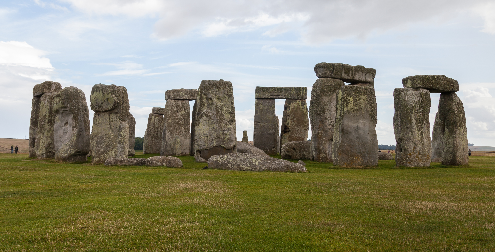

Hemos visto cómo y cuándo nació lo sagrado. Queda la pregunta más difícil: por qué. ¿Qué hay en la mente humana que fabrica dioses casi sin esfuerzo?
Las entregas anteriores fueron arqueología: huesos, piedras, pinturas. Esta es distinta. Damos un paso atrás y preguntamos, desde la ciencia cognitiva y la psicología evolutiva, por qué la religión aparece en todas las culturas humanas conocidas, sin excepción. La respuesta que ofrece esta ciencia es incómoda y fascinante: quizá no creemos a pesar de cómo funciona nuestra mente, sino a causa de cómo funciona.
Ojo con lo que esta pregunta significa —y con lo que no significa—. Preguntar "por qué el ser humano tiende a creer" es una cuestión psicológica y evolutiva: trata de cómo está hecha nuestra mente. No es lo mismo que preguntar "¿existe Dios?", que es una cuestión filosófica y teológica que la ciencia cognitiva no responde. Explicar por qué una creencia es natural para nuestro cerebro no dice nada sobre si es verdadera o falsa. Conviene tener esto claro antes de seguir.
Esta entrega no pregunta si los dioses existen. Pregunta por qué el cerebro humano cree tan fácilmente en ellos. Son dos preguntas totalmente distintas, y conviene no confundirlas.
La teoría más influyente parte de una idea simple: nuestro cerebro es una máquina de detectar agentes. Durante millones de años, a nuestros antepasados les convino muchísimo suponer que detrás de un ruido en la hierba había alguien —un depredador, un rival—. Quien salía corriendo ante un simple golpe de viento perdía poco; quien ignoraba al león real, lo perdía todo.
El resultado es un cerebro que prefiere ver intención donde quizá no la hay. Los psicólogos lo llaman "detección hiperactiva de agentes". Es la misma tendencia que nos hace ver caras en las nubes, sentir que la suerte "nos castiga" o intuir una voluntad detrás de la tormenta, la enfermedad o la buena fortuna. De ahí a imaginar agentes invisibles —espíritus, ancestros, dioses— que mueven el mundo, hay un paso muy corto.
La detección de agentes no actúa sola. Los investigadores de la ciencia cognitiva de la religión —Pascal Boyer, Scott Atran, Justin Barrett, entre otros— describen varias tendencias mentales que, combinadas, hacen que la religión nos resulte casi inevitable:
Suponemos intención detrás de los sucesos. Es útil para sobrevivir, pero nos lleva a imaginar seres con voluntad donde solo hay azar o naturaleza.
Atribuimos pensamientos y deseos a los demás de forma automática. Extendida a lo invisible, esa capacidad nos permite imaginar dioses que piensan y quieren.
Recordamos mejor las ideas que son casi normales pero rompen una regla: un ser como una persona, pero que lo ve todo, o no muere. Boyer las llama conceptos "mínimamente contraintuitivos".
Los ritos y los dioses compartidos refuerzan la cooperación y la confianza en grupos grandes. La religión que une pudo dar ventaja a quienes la practicaban.
Juntas, estas piezas sugieren que la religión no es un añadido extraño a la mente humana, sino un subproducto casi inevitable de cómo pensamos: de nuestra tendencia a ver intenciones, leer mentes, recordar lo extraordinario y unirnos en grupo. No hizo falta "inventar" a los dioses; la mente humana los produce casi sola.

Aquí conviene, como siempre, ser honestos sobre los límites. Estas teorías explican por qué la creencia nos resulta natural. Pero de ese mismo hecho se pueden sacar conclusiones opuestas, y la ciencia no zanja cuál es la correcta —porque ya no es una pregunta científica—.
Si la mente fabrica dioses por sus propios sesgos, quizá los dioses sean justamente eso: proyecciones de nuestra psicología, no realidades externas.
Que tengamos una disposición natural a lo trascendente no prueba que su objeto no exista; del mismo modo que tener ojos no significa que la luz sea una ilusión.
Esta serie no toma partido en esa disputa: no es asunto de la arqueología ni de la ciencia cognitiva, sino de la filosofía y de cada persona. Lo que sí podemos afirmar es lo primero: la tendencia a creer está profundamente inscrita en la mente humana. Los dioses, vengan de donde vengan, encuentran en nosotros un terreno extraordinariamente fértil.
Lectura: hay buen apoyo empírico para que existan sesgos cognitivos (detección de agentes, lectura de mentes) que favorecen la creencia. El peso relativo de cada factor —¿subproducto o adaptación para la cohesión?— sigue en debate activo. Y lo que estas teorías no deciden es si los dioses existen.
La detección hiperactiva de agentes fue formulada por Stewart Guthrie (Faces in the Clouds, 1993) y Justin Barrett. Los conceptos "mínimamente contraintuitivos" son de Pascal Boyer (Religion Explained, 2001); Scott Atran desarrolló la teoría evolutiva en In Gods We Trust (2002). La línea de la cohesión social y los "modos de religiosidad" se asocia a Harvey Whitehouse y a los estudios sobre Çatalhöyük dirigidos por Ian Hodder.
Existe un debate real entre quienes ven la religión como un subproducto de sesgos cognitivos y quienes la ven como una adaptación que favoreció la cooperación; probablemente intervienen ambos factores.
Debe subrayarse un límite epistemológico: explicar el origen psicológico de una creencia no demuestra su verdad ni su falsedad (incurrir en lo contrario sería la "falacia genética"). Esta serie describe el fenómeno; no dictamina sobre la existencia de lo divino.